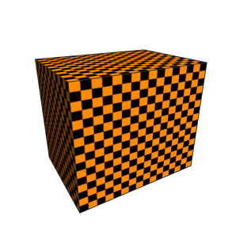

setMaterial operation
setMaterial(material)
material string[] A string array containing key-value pairs in the form of [ attr-name0, value0, attr-name1, value1, ... ]. The names of the material attributes are without the "material." prefix.
Sets the material attributes of the current shape's material according to material. This operation allows for setting of multiple (all) material attributes in one operation.
The result will be the same as using set() to set each material attribute individually.
Related
Examples
Example 1
myMaterial = [ "color.r", "1.0",
"color.g", "0.0",
"color.b", "0.0",
"opacitymap", "builtin:default" ]
Lot --> primitiveCube
scaleUV(0,0.25,0.25)
setMaterial(myMaterial)
Using setMaterial() to set a number of material attributes in one operation.
Example 2: loading a .cgamat file

Lot -->
primitiveSphere
setMaterial(readMaterial("materials/Metal2/Metal2.cgamat"))
Using setMaterial() and readMaterial() to load a .cgamat material description (including textures) from disk.
CityEngine's CGA Material Encoder allows for writing cgamat files via model export.
Example 3: using a CSV file to define a material

RefExampleCSV-->
primitiveCube
setMaterial(readStringTable("exampleMaterial.csv"))
exampleMaterial.csv:
color.r,1 color.g,0.5 color.b,0 colormap,builtin:default
Material descriptions in CSV files can be used via readStringTable().